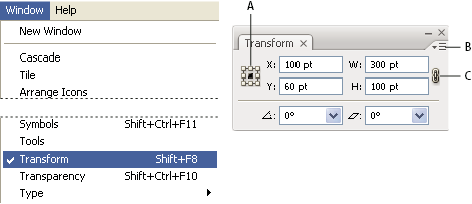

Transform panel overview
The Transform panel (Window > Transform) displays information about the location, size, and orientation of one or more selected objects. By typing new values, you can modify the selected objects, their pattern fills, or both. You can also change the transformation reference point and lock the object’s proportions.
All values in the panel refer to the bounding boxes of the objects
except for the X and Y values, which refer to the selected reference
point.
Note: The reference point locator in the Transform panel
specifies an object’s reference point only when you transform the
object by changing the values in the panel. Other methods of transforming
(such as using the Scale tool) use the object’s center point or
the pointer location as the reference point.

Transform panel
- A.
- Reference point locator
- B.
- Panel menu
- C.
- Lock proportions icon